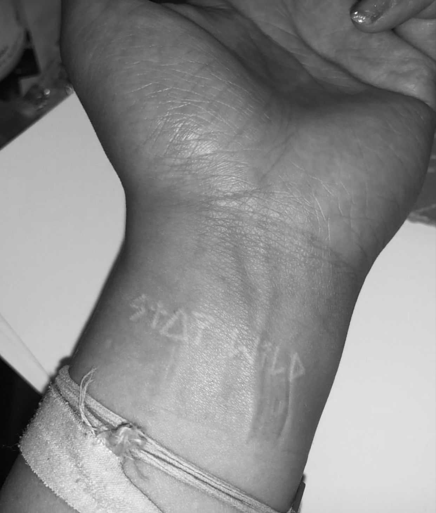

'Stay Wild'
'Stay Wild'
TATTOO ONE
Name - Ingrid Tai
Tattoo and placement - The words 'STAY WILD' written on the inside of the wrist.
How old are you? - 20 years old.
How old were you when you got this tattoo? - 18 years old.
How many tattoos do you have in total? - 3
How much did it cost you? - 80 euros
Where did you get it done? - American Body Tattoos, Paris.
How long did it take? - Half an hour.
How impulsive was it? - Thought of getting all throughout high school, but decided impulsively on my way home from class, when I was studying in France where they’re way more lax about tattoos. I had all this money that my parents had given me because I was abroad so I spent it on a tattoo.
Does this tattoo have a meaning behind it? - I wrote it a lot in sketch book and I’m into extreme sports like snowboarding and skating.
Is it your own artwork? - It’s inspired by other typefaces, but worked it out in own style.
BACK BACK BACK BACK BACK BACK BACK BACK
